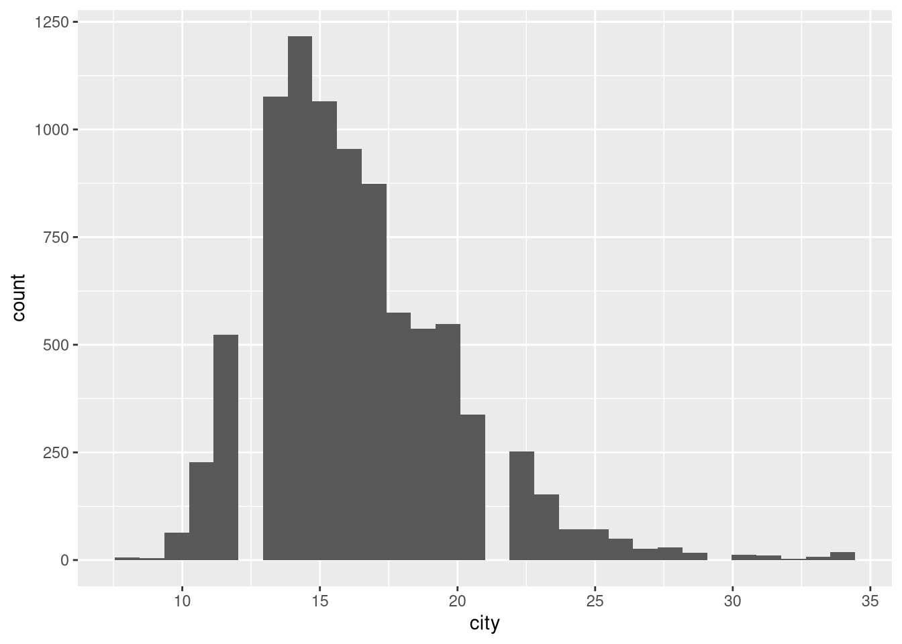
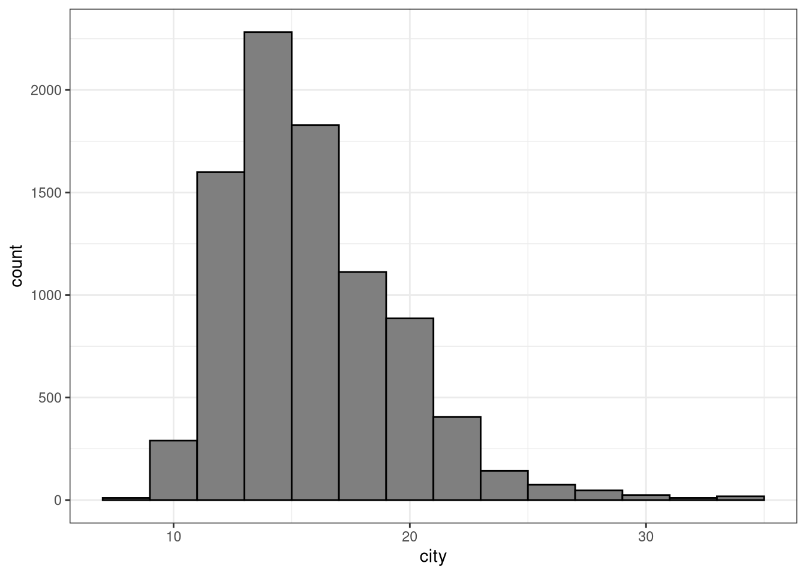
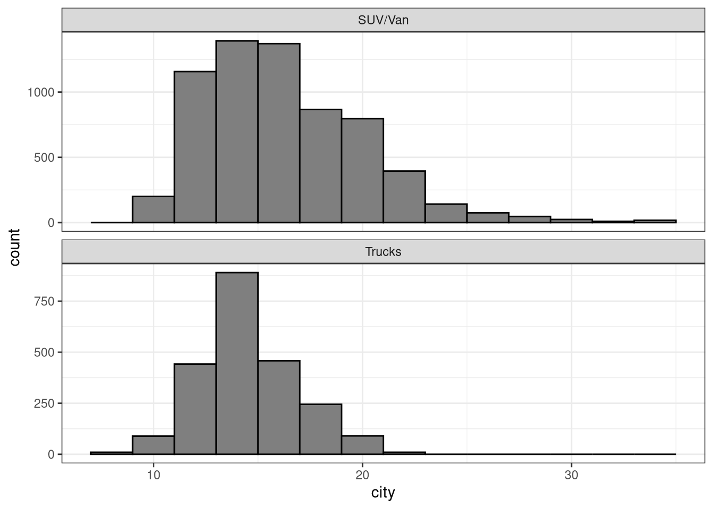
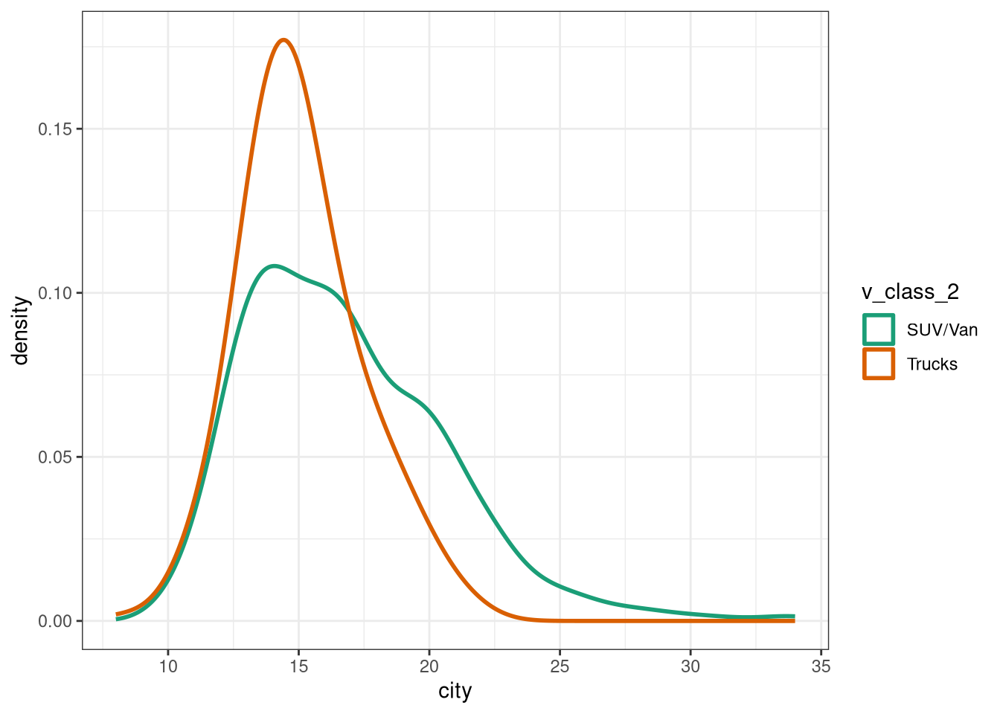

library(tidyverse)
library(stat1080r)2.3.a - Class Activity
This assignment is intended to give you experience using ggplot2. For this assignment, we will be using the mpg_hawkes dataset available in the stat1080r package. Recall from the homework assignments that this package is installed using the command install.packages("stat1080r", repos = "https://beanb2.r-universe.dev"). Remember that you only need to install this package once per semester. However, you still need to use library(stat1080r) each time you start R and want to use it. Do not try to run the following block of code until after the stat1080r package has been installed.
This assignment will focus on the mpg_hawkes dataset. For more information about the variables in mpg_hawkes, please use the ?mpg_hawkes command in the console. Note that the dataset will only be available to use after running library(stat1080r).
The following code takes mpg_hawkes and creates two new variables. The first variable (decade) is a factor based on the decade the vehicle was made. The second variable (v_class_2) is a factor based on the vehicle type, after using “regular expressions” to group some smaller categories into larger groups. Run this block once at the start. You don’t need to re-run it unless you restart R.
mpg_hawkes <- mpg_hawkes |>
mutate(
decade = case_when(
year >= 1980 & year < 1990 ~ "1980s",
year >= 1990 & year < 2000 ~ "1990s",
year >= 2000 & year < 2010 ~ "2000s",
year >= 2010 & year < 2020 ~ "2010s"
),
v_class_2 = case_when(
regexpr("Cars", VClass) > 0 ~ "Cars",
regexpr("Two Seaters", VClass) > 0 ~ "Cars",
regexpr("Utility", VClass) > 0 ~ "SUV/Van",
regexpr("[Vv]an", VClass) > 0 ~ "SUV/Van",
regexpr("Truck", VClass) > 0 ~ "Trucks",
TRUE ~ "Other"
)
)1 Problem
The following block of code uses dplyr (i.e., one of the packages in the tidyverse) function to count the number of vehicles of each class.
v_count <- mpg_hawkes |>
group_by(v_class_2) |> # group by vehicle type
summarize(n = n()) # assign the counts of each type to the variable "n"
v_count# A tibble: 4 × 2
v_class_2 n
<chr> <int>
1 Cars 19860
2 Other 4942
3 SUV/Van 8051
4 Trucks 5839This code shows that there are nearly 20k “Cars” and about 8k “SUV/Van” in the dataset.
For this problem, copy the code from the above code chunk and adapt it to count the number of vehicles per decade. Question for Canvas: How many vehicles are included in the dataset from the 1980s?
# Copy the code from above and adapt as needed.
decade_count <- mpg_hawkes |>
group_by(decade) |>
summarize(n = n())
decade_count# A tibble: 4 × 2
decade n
<chr> <int>
1 1980s 7220
2 1990s 9562
3 2000s 10643
4 2010s 112672 Problem
Create a dataset called mpg_select that
- only considers the variables
city,highway,year, andv_class_2 - only considers vehicles listed as “Trucks” or “SUV/Van” (HINT: remember the
%in%function) - only considers vehicles made since the year 2000 (including the year 2000).
Question for Canvas: How many vehicles remain in mpg_select?
mpg_select <- mpg_hawkes |>
select(city, highway, year, v_class_2) |>
filter(year >= 2000 & v_class_2 %in% c("Trucks", "SUV/Van"))3 Problem
Create a histogram of city miles per gallon (MPG) using all vehicles in mpg_select. Do not worry about any visual optimization at this stage.
mpg_select |>
ggplot(aes(x = city)) +
geom_histogram()
4 Problem
Now create an improved version of this histogram by doing the following.
- use the
binwidthargument to make each bin of the histogram represent 2 MPG increments. - use the
fillargument OUTSIDE ofaes()to change the fill of the histogram to be the color “gray50”. - use the
colorargument OUTSIDE ofaes()to change the color of the histogram square boundaries to be “black”. - use
theme_bw()with no additional arguments to change the plot background.
Assign your plot to the variable p1 and then call p1 by printing it to the screen.
p1 <- mpg_select |>
ggplot(aes(x = city)) +
geom_histogram(
binwidth = 2,
color = "black", fill = "gray50"
) +
theme_bw()
p1 # Print to the screen
Discuss with a partner: How would you describe the distribution of city MPG (left-skewed, right-skewed, symmetric) and why? Note that you will input the skewness type in the Canvas quiz.
I would describe the distribution of city MPG as right skewed because there are a few vehicles that have much higher MPG relative to the typical MPG, which tends to be around 15 MPG.
5 Problem
For this next plot, we are going to add another layer to the p1 plot. The layer you are going to add is facet_wrap(~v_class_2, ncol = 1, scale = "free_y"). Print this updated plot to the screen. The result should be two histograms stacked on top of each other, one showing the City MPG for SUV/Van and the other for Trucks.
p1 + facet_wrap(~v_class_2, ncol = 1, scale = "free_y")
6 Problem
The following code shows you how to create colored density plots to compare the city MPG for SUV/Vans and Trucks.
mpg_select |>
ggplot(aes(x = city, color = v_class_2)) +
geom_density(lwd = 1, bw = 1) +
scale_color_brewer(type = "qual", palette = "Dark2") +
theme_bw()
Discuss with a partner: Using the histograms or the density plot, describe the difference in the city MPG for SUV/Van vs Trucks. Also, please note which visual you preferred (histogram vs density plot) for making that comparison.
Trucks tend to get worse city MPG compared to SUV/Vans, though both Trucks and SUVs seem to have similar proportions of vehicles with city MPG ratings of 13 MPG or less. SUV/Vans seem more likely to have MPG ratings above 20 MPG compared to trucks.